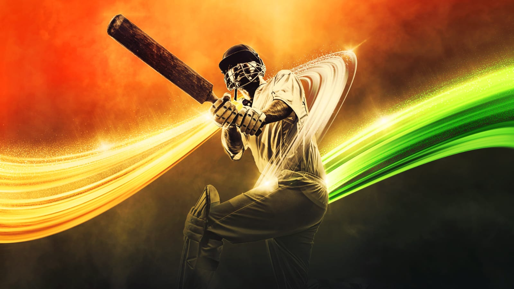

History of Cricket
Cricket originated in England during the 16th century and became a national sport by the 18th century. It spread across the British Empire and took root in countries like India, Australia, South Africa, and the West Indies.
The first international match was played between the USA and Canada in 1844. Test cricket began in 1877 between England and Australia. Since then, cricket has evolved into various formats like ODIs and T20s, reaching millions of fans worldwide.
Basic Rules of Cricket
- Two teams of 11 players each
- One team bats while the other bowls and fields
- Objective: score more runs than the opponent
- Match formats: Test (5 days), One Day (50 overs), T20 (20 overs)
- Key elements: batting, bowling, fielding, and running between wickets
Famous Cricket Tournaments
- ICC Cricket World Cup (ODI)
- ICC T20 World Cup
- The Ashes (England vs Australia)
- Indian Premier League (IPL)
- Big Bash League (Australia)
Legendary Cricket Players
- Sachin Tendulkar (India)
- Virat Kohli (India)
- MS Dhoni (India)
- Ricky Ponting (Australia)
- Jacques Kallis (South Africa)
- Ben Stokes (England)
Health Benefits of Playing Cricket
- Improves endurance and muscle tone
- Enhances hand-eye coordination and reflexes
- Builds teamwork and strategy
- Boosts cardiovascular health and focus
- Promotes physical fitness and agility
Cricket’s Global Popularity
Cricket is especially popular in countries like India, Pakistan, Australia, England, Bangladesh, and South Africa. It unites billions of fans across nations and cultures, and continues to grow through leagues, media, and youth programs worldwide.